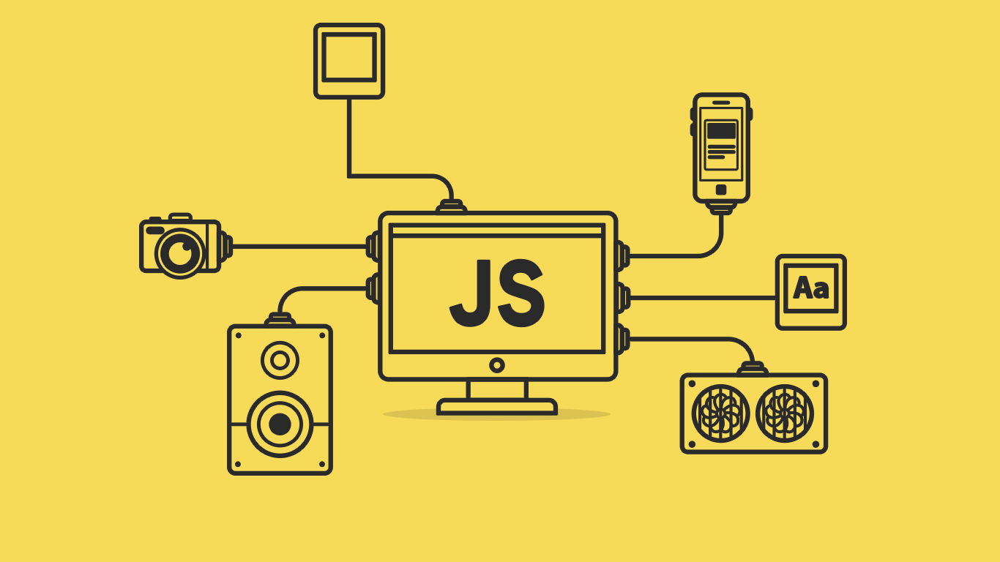

Web designing is the process of creating and designing websites, focusing on aesthetics, layout, user experience, and functionality. It involves a blend of creative and technical skills to build visually appealing and user-friendly web pages.
Key Aspects of Web Designing:
Visual Design: This includes selecting color schemes, typography, images, and other visual elements to create an attractive and cohesive look for the website.
Layout: Designing the structure and organization of content on the web pages, ensuring it is easy to navigate and visually appealing. Common layouts include grid systems and responsive design for different devices.
User Experience (UX): Ensuring that the website is intuitive and easy to use. This involves considering the user's journey through the site, simplifying navigation, and providing clear calls to action.
User Interface (UI): Focusing on the interactivity and functionality of the website's elements. This includes designing buttons, forms, menus, and other interactive components.
Responsive Design: Creating websites that work well on a variety of devices and screen sizes, from desktops to smartphones. This often involves using flexible grids, layouts, images, and CSS media queries.
Typography: Choosing and applying fonts in a way that enhances readability and aligns with the website's overall aesthetic.
Content: Organizing and presenting text, images, videos, and other media in a clear and engaging way. Content should be relevant, valuable, and well-structured.
SEO (Search Engine Optimization): Ensuring the website is optimized for search engines, which helps improve its visibility and ranking in search results.
Accessibility: Making the website usable for people with disabilities, including those who use screen readers or other assistive technologies. This involves adhering to web accessibility standards and guidelines.Learn More......
HTML

HTML, or Hypertext Markup Language,
is the standard language for creating
and structuring web pages and web
applications. It utilizes tags to
define elements such as headings,
paragraphs, images, links, and forms,
which browsers then interpret to display
content visually. HTML provides the
basic structure and framework for
building websites, allowing developers
to organize and present text, media,
and interactive elements in a cohesive
and accessible manner.Learn more...
CSS

CSS, or Cascading Style Sheets, is
a language used to describe the
presentation and formatting of
HTML documents. It allows web
developers to control the layout,
appearance, and design of multiple
web pages all at once through rules
and selectors. CSS separates the
content of a webpage from its design,
enabling customization of fonts, colors,
spacing, and positioning of elements.
By applying CSS, websites can achieve
consistency in style and aesthetics
across different devices and screen
sizes, enhancing user experience and
visual appeal.Learn more...
bootstrap

Bootstrap is a popular front-end
framework for building responsive and
mobile-first websites and web
applications. Developed by Twitter, it
provides a set of pre-built CSS and
JavaScript components, templates, and
utilities that streamline the process
of designing consistent and visually
appealing interfaces. Bootstrap's grid
system allows developers to create
responsive layouts easily, adapting to
various screen sizes and devices. Its
extensive documentation and community
support make it a powerful tool for
developerslooking to quickly prototype
and build modern, responsive web
projects.Learn more....
Jacascript

JavaScript is a high-level, versatile
programminglanguage primarily used to
create and control dynamic website
content. It's an essential part of web
development, enabling interactive
features like animations, form
validations, and content updates
without reloading the page.Learn more...
Jquery

jQuery is a fast, small, and feature-rich
JavaScript library designed to simplify
HTML DOM tree traversal and manipulation,
event handling, CSS animation, and Ajax.
It provides an easy-to-use API that works
across a multitude of browsers, making
tasks like HTML document manipulation,
event handling, and animation much
simpler with less code compared to pure
JavaScript. This makes it a popular choice
for web developers to create interactive
and dynamic websites quickly and
efficiently.Learn more...
ReactJs
React.js is a popular JavaScript library
for building user interfaces, particularly
single-page applications where a seamless
user experience is crucial. Developed by
Facebook, React allows developers to create
reusable UI components, making it easier to
manage and develop complex user interfaces.
It uses a virtual DOM to efficiently update
and render components, resulting in improved
performance. React's component-based
architecture encourages modularity and
reusability, facilitating the development
and maintenance of large-scale
applications. Learn more...
interviewQuestions

Interview questions are designed to
evaluatea candidate's qualifications,
skills, experience, and fit for a
specific role. They can include
technical questions to assess expertise
in relevant areas, behavioral questions
to understand past actions and predict
future behavior, and situational questions
to gauge problem-solving abilities in
hypothetical scenarios. Additionally,
cultural fit questions help determine
alignment with the company's values
and work environment. By asking a mix
of these questions, employers aim to
identify the most suitable candidates
for their open positions. Learn more...